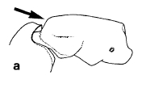
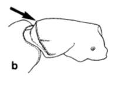

Cerapachys & Leptogenys
C. humicola
" style="cursor:help;">PE
PN " style="cursor:help;">d-lview: C. humicola


JAD
C. biroi/hashimotoi
PN " style="cursor:help;">d-lview
(a) " style="cursor:help;">t2 " style="cursor:help;">PE + " style="cursor:help;">t1 : C. biroi, C. hashimotoi

JAD